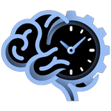

Brain O' ClockPrivacy Policy
Last updated: 22 November 2026
1. Who is responsible
Brain O' Clock is run by Brainwake & Co., based in Kenya, who decides how your personal data is used (the "data controller"). Contact: brainiswaken@gmail.com.
2. What is stored, and why
| What | Why | Where |
|---|---|---|
| Your alarms and settings | To ring them. | On your phone. If you are signed in, a backup copy is kept with your account so they can be restored on a new phone. |
| Account: email address, display name, and if you use Google sign-in, the name and email Google gives us. Your password is stored only in scrambled (hashed) form. | To sign you in and keep your things yours. | Our database. |
| Study history: sessions, the questions you answered, what you typed, whether it was right, and how long it took. | Reports, "needs revision", choosing what to ask next, and restoring your progress on another phone. | On your phone, and with your account when signed in. |
| Your own questions and topics | So you can use them and get them back. | On your phone, and with your account when signed in. |
| Plan and payments: which plan you bought, when, the amount, the payment reference and status, and any code used. | To switch your plan on and to keep accounts. | Our database. Card numbers and M-Pesa PINs never reach us. |
| AI requests: the question, the correct answer and what you typed, when you use the tutor, AI marking or ask for new questions; and a count of your requests per day. | To give the AI's reply and apply the daily limit. | Passed to the AI provider for that one reply (see section 4); only the count is kept by us. |
| Alarm diary and problem reports (only if "Share diagnostics" is on, or when you send a report): when alarms were set, rang, were missed or snoozed; phone maker and model, Android version, app version; which permissions are granted; why the system last closed the app. | To find out why an alarm did not ring and fix it. | Our database. |
| Profile picture, if you add one. | To show it in the app, also on a new phone. | On your phone and in private storage with your account; only you can open it. |
| Anonymous usage count: about once a day the app sends a random number it made up for that phone, its plan level (no account, free, Pro or Ultra) and its version. If "Share diagnostics" is on, it adds running totals: questions answered, how many were right, alarms answered and missed. | To know how many phones use the app and how alarms and the question bank are doing. | Our database. It contains no name, email or answers. |
| Agreement to the terms: the date you accepted them when creating your account. | As a record of the agreement. | Our database. |
| Flagged questions: the question, your reason and your note. | So an editor can review the question. | Our database. |
Without an account, everything stays on your phone, apart from downloading the starter questions and the anonymous usage count above. The app does not read your contacts, messages, photos, location or microphone, and it has no adverts and no advertising trackers.
3. Permissions the app asks for on your phone
- Notifications, alarms and reminders, full-screen notifications, display over other apps, running without battery limits, start at boot: all so an alarm can ring on time and show the quiz, also when the phone is locked or was restarted.
- Internet: sign-in, syncing, checking your plan, payments and the AI.
- Device admin app (only if you switch on "Block uninstalling while an alarm rings"): used only to stop the app being removed during an alarm, and to lock the screen if someone tries. It gives us no access to your data and can be switched off in the app.
4. Who else handles your data
We use a small number of companies to run the service. They process data on our instructions:
- Supabase: the database and sign-in system.
- Microsoft Azure: hosts our server that handles payments and AI requests.
- Paystack: takes payments. For M-Pesa we pass on the phone number you enter and your email; for cards you type the details on Paystack's own page.
- Google: only if you choose "Continue with Google" to sign in.
- AI providers (such as Google Gemini or Groq): receive the text of an AI request (the question, the answer and what you typed). We do not send them your name, email or account number. Please do not type personal or patient details into answers or notes.
- Our email provider: sends sign-up confirmation and password reset emails.
Some of these companies store data outside Kenya (for example in the European Union or the United States). We use providers that commit to appropriate safeguards for such transfers. We do not sell your personal data, and we share it with nobody else unless the law requires it.
5. Our legal grounds
Under the Kenya Data Protection Act, 2019 we rely on: performing our agreement with you (account, sync, plans, AI you asked for); your consent (sharing diagnostics, which you can switch off at any time in Settings, Privacy); our legitimate interest in keeping the service safe and working (limits, preventing abuse, fixing alarms); and legal duties (keeping payment records).
6. How long we keep it
- Account and study history: until you delete your account.
- Alarm diary and problem reports: until you delete your account.
- Payment records: as long as tax and accounting law requires (up to 7 years), kept without your study data once your account is deleted.
- Data on your phone: until you clear it in the app or uninstall the app.
7. Your choices and rights
- Delete everything: Settings, Account, Delete account. This removes your account and the data stored with it from our database.
- Stop sharing diagnostics: Settings, Privacy.
- Use it without an account: choose "Continue without an account".
- You also have the right to be told how your data is used, to see it, to have it corrected or erased, to object to or restrict some uses, and to receive a copy. Write to brainiswaken@gmail.com and we will answer within 30 days.
- If you are unhappy with our answer you can complain to the Office of the Data Protection Commissioner of Kenya (odpc.go.ke).
8. Keeping it safe
Connections to our servers are encrypted. In the database each person can read only their own rows. Sign-in tokens are kept in the phone's secure storage. Outside a ringing alarm, the app stays behind your phone's lock screen. No system is perfectly secure; if a breach affects you we will tell you and the regulator as the law requires.
9. Children
Brain O' Clock is made for students in higher education. It is not meant for children under 13, and we do not knowingly collect their data. If you believe a child has given us data, write to us and we will delete it.
10. Changes
If we change this policy in a way that matters, we will tell you in the app or by email before the change takes effect. The date at the top shows the latest version.